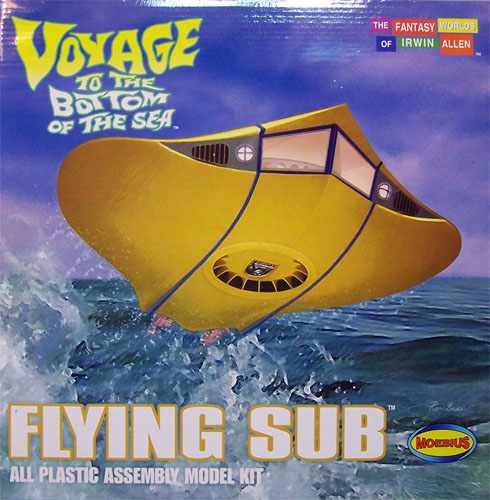
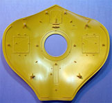
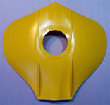
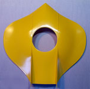
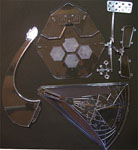
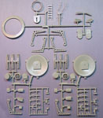
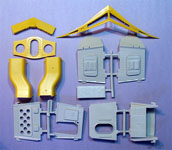

{kind=link}
{kind=link}
{kind=link}
{kind=link}
{kind=link}
{kind=link}


 Moebius Flying Sub
from “Voyage To The Bottom Of The Sea”, 1/32 scale
Kit #817 MSRP $74.99 $67.49 from Squadron.com
Images and text Copyright © 2009 by Matt Swan
Developmental Background
In 1961 the discovery of the Van Allen radiation belts was still news and Irwin Allen used this to construct a tale around an advanced research submarine tasked with an impromptu mission to save the world. 20th Century Fox released this film that seems to be inspired by Jules Verne’s 20,000 Leagues. In 1964 the movie premise was developed into a regular television series which utilized many of the same sets and special effects bases and rapidly became a cult classic. During the evolution of the television series in the second season (also the transition from B&W to color) a small, detachable nuclear powered submersible was introduced that included flight characteristics and became known amongst fans as ‘The Flying Sub’.
The Kit
Established in 2005 by Frank Winspur Moebius Models has an interesting repertoire of Sci-Fi movie and television subjects in various scales ranging from horror flicks to the 2008 production of “Iron Man”. Moebius has been working hard to fill the gap left by Polar Lights when they discontinued most of their movie subject line in 2004. Many of the items released by Moebius are reissues of the old Aurora line but some are new. This year two new items have been added to their list; the Flying Sub kit in 1/32 scale and a 1/8 scale Iron man kit. Today we’ll talk about the Flying Sub.
The kit arrives in a good size sturdy cardboard box with eye catching artwork of the sub just clearing the water. Inside things are carefully packaged to avoid damage. In fact, they are so well packaged that once the modeler has removed the parts to inspect them it is a little bit of a challenge to get them all back into the box. The main hull parts are molded in color so the modeler could simply assemble the hull pieces without painting if so desired (seems kind of sacrilegious to me). Sheets of plastic are layered between the hull pieces so no shipping scratches can occur. We get several pieces molded in this bright yellow plastic along with a couple sprues of steel gray parts and a collection of clear parts including not only the windows but a pretty nice display stand and cabin floor.



To the left we have images on the inside and outside of the lower hull along with a shot of the upper hull. You may click on those images to view larger pictures. Take note of the deeply engraved lines inside the lower hull where, should the modeler so desire, things could be opened up and landing gear and bay detail could be scratch built. Interior detail is pretty good with the kit including several internal girders along with other control room details.
All of the parts look good with no obvious sink holes or excessive injector pins, there are some fine mold separation seams but nothing any different than what you would expect from any main line manufacture. We get seven parts in yellow plastic, eighty three parts in steel gray and ten very nice clear parts. You may wonder why the floor pan is provided as a clear part but consider what would happen if you added some lighting to this model – could be very cool. If you have ever watched any of these old episodes you may have noticed the lit panels in the floor. As far as kit accuracy goes this models was engineered from digital scans taken of an actual studio prop used in the series production and faithfully reproduces the hull shape seen on television.



Instructions
This kit does not include any decals so nothing to talk about on that score. For instructions we have a somewhat nonconventional three page fold-out that provides a full color image of the box art along with a very good background of the development of the model during the lifespan of the television series. The instructions include an in-depth paint chart with paint codes for Testors paints only. We get seven nice exploded view prints for basic assembly along with thirteen excellent color photographs showing how completed assemblies should look and with some painting suggestions, all in all a very nice set of instructions that go a long way towards idiot proofing the model.
Conclusions
Are you a “Voyage” cult member? Or maybe you just have a basic liking for fantasy subjects or submarines, either way you want to give this kit some serious consideration. The kit engineering is very good allowing for what appears to be a fairly trouble free build straight from the box or something that would allow the advanced modeler to really go nuts and add all sorts of goodies such as lights and landing gear details to name a few. Packaging is well thought out and obviously designed to make certain the model arrives to the customer undamaged. This also provides for a good stash survivability factor with a sturdy cardboard box. Instructions are a little unconventional but definitely good and remind me of stuff I’m seeing from the new aircraft model company, Wingnuts. Overall I give this kit a very good recommendation for modelers of all skill levels.